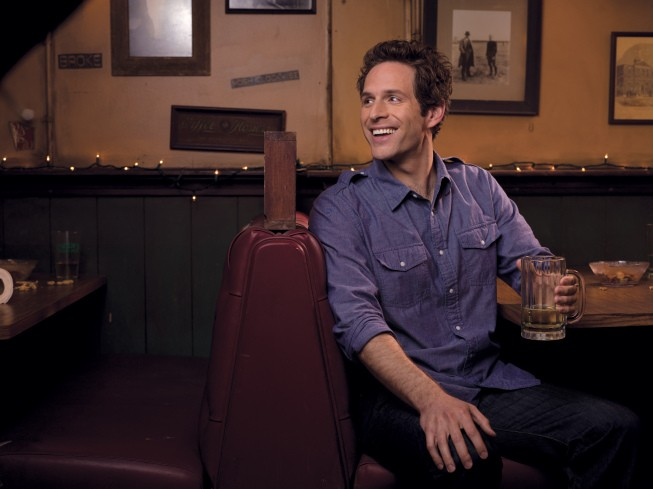
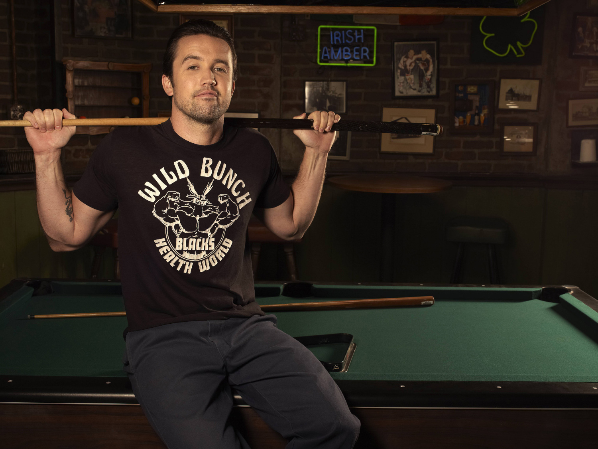
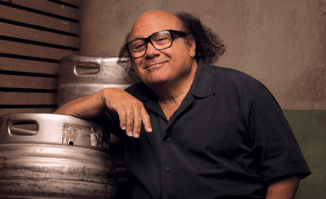
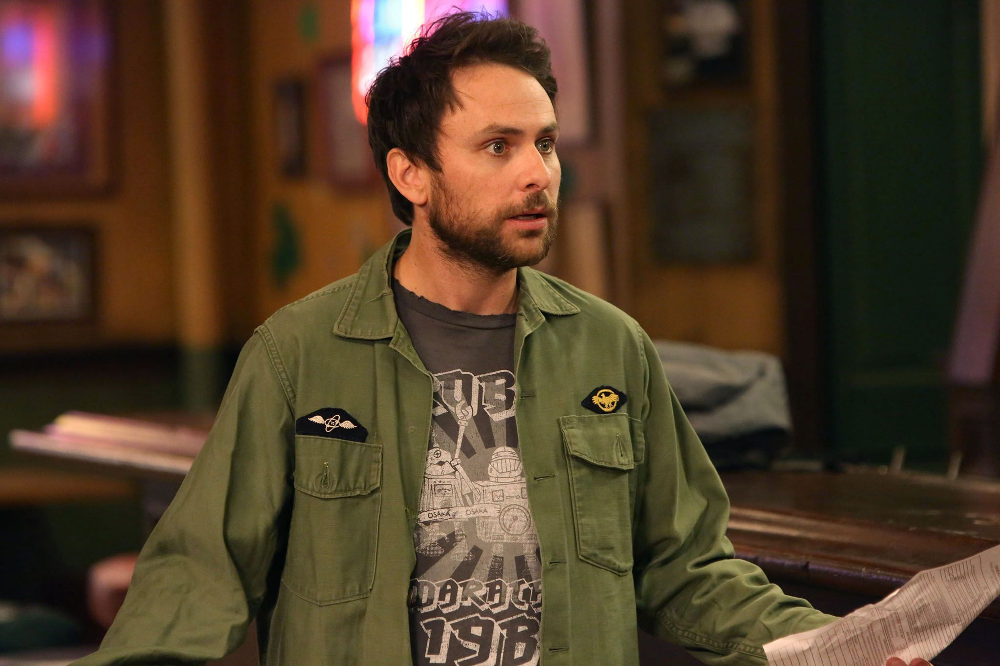

The Gang is Always up to Something
This sitcom has been running since 2005, and revolves around the "gang" drinking and scheming to pass the time.
Dennis Reynolds
Dennis Reynolds is the main strategizer for the group, and he is always determined to get things done his way.
Dee Reynolds
Dee Reynolds is a bartender and up and coming celebrity with the inability to tell a decent joke or make a decent drink.
Ronald MacDonald
Ronald MacDonald, referred to as "Mac", cannot view himself the way everyone on the outside does, and believes that through God, all things are possible.
Frank Reynolds
Frank Reynolds funds the schemes and antics, while trying to make the most of his life due to the significant age gap between him and the other members of the gang.
Charlie Kelly
Charlie Kelly is an illiterate custodian who enjoys spending his time cleaning up around the bar, trying to make the waitress fall in love with him, or being the wildcard.